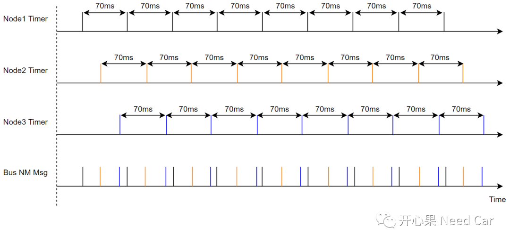
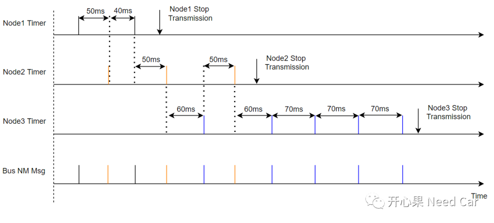
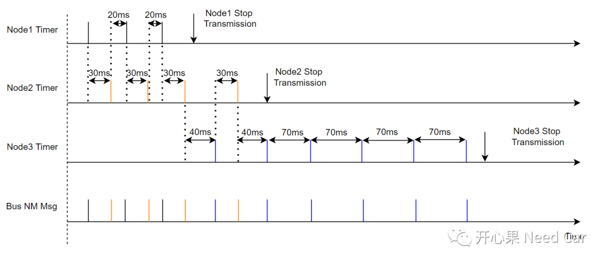
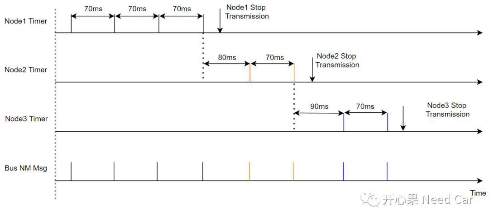
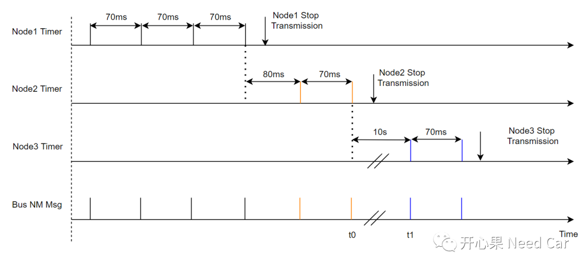

开心果 Need Car · 2022-06-05T15:18:00+08:00 · 微信原文
是不是觉得：Bus Load Reduction Mechanism有点眼熟，又一时想不起是干啥的？确实，该功能在实际的网络管理开发中，使用较少。但是，我不能揣着糊涂装明白，该功能的idea还是值得一学。
为什么要有Bus Load Reduction Mechanism呢？我们先看这样一种情况：假设总线有3个节点，Node1、Node2、Node3，三个节点的发送周期均为70ms。不使用Reduced Bus Load功能，在NOS状态下，总线上NM Msg的发送行为如下所示：

上图可以看出：总线上的NM Msg发送密度大，会占用一定时间的总线使用权。如果一个网段内的主动网络节点过多，且在NOS状态均发送各自的NM Msg（主动唤醒网络），势必会加大总线的负担。为了确保功能算法的可靠性，App Msg及时被接收和处理，所以，应尽可能地将总线使用权让给App Msg，在网络可以保持的前提下，尽可能地减少NM Msg的发送密度，进而避免过多的抢占App Msg使用总线，这就是Bus Load Reduction Mechanism出现的背景。
假设：总线有3个节点，Node1、Node2、Node3，三个节点的发送周期均为70ms。Node1 CANNM_MSG_REDUCED_TIME = 40ms，Node2 CANNM_MSG_REDUCED_TIME = 50ms，Node3 CANNM_MSG_REDUCED_TIME = 60ms。使用Reduced Bus Load功能时，总线上NM Msg的发送行为如下所示：

对比不使用Bus Load Reduction Mechanism，使用Bus Load Reduction Mechanism时，总线上的NM Msg发送密度极大的降低，让出了一定时间的总线使用权。
使用Bus Load Reduction Mechanism需要注意什么呢？
Bus Load Reduction Mechanism在NOS状态下使用。在RMS状态下，为了快速唤醒网络，某些节点存在快发行为，所以，RMS状态不使用Bus Load Reduction Mechanism；
同一网段内，每个节点CANNM_MSG_REDUCED_TIME应不同，否则不能达到降低NM Msg发送密度的目的；
同一网段内，主动外发NM Msg节点的数量大于2个时，只有CANNM_MSG_REDUCED_TIME最小的两个节点外发NM Msg，比如：上例中，最小的两个CANNM_MSG_REDUCED_TIME，分别对应Node1和Node2，所以进入NOS状态时，Node1和Node2先发送各自的NM Msg，当Node1停发以后，Node2和Node3再交替发送各自的NM Msg；
节点每次接收到其他节点的NM Msg时，下一次NM Msg的发送时间Timer重载CANNM_MSG_REDUCED_TIME（本例：Node1为40ms，Node2为50ms，node3为60ms）。如果节点每发送一次NM Msg，下一次的发送时间Timer重载CANNM_MSG_CYCLE_TIME（本例：70ms）。
使用Bus Load Reduction Mechanism，节点NM Msg的发送周期≥ CANNM_MSG_CYCLE_TIME，这也是总线NM Msg密度会降低的原因。所以，CANNM_MSG_REDUCED_TIME需要满足一定的约束条件，即：1/2CANNM_MSG_CYCLE_TIME＜CANNM_MSG_REDUCED_TIME＜CANNM_MSG_CYCLE_TIME。如果该约束条件满足不了则达不到降低总线NM Msg发送密度的目的。
1、CANNM_MSG_REDUCED_TIME＜1/2CANNM_MSG_CYCLE_TIME
假设：Node1 CANNM_MSG_REDUCED_TIME = 20ms，Node2 CANNM_MSG_REDUCED_TIME = 30ms，Node3 CANNM_MSG_REDUCED_TIME = 40ms。三个节点的外发周期均为70ms，Node1和Node2的CANNM_MSG_REDUCED_TIME不满足约束条件。总线上NM Msg的发送行为如下所示：

由上可以看出，Node1和Node2的NM Msg发送周期为50ms，比正常发送周期CANNM_MSG_CYCLE_TIME（70ms）小，总线上NM Msg的发送密度不是最优的工况。
2、CANNM_MSG_REDUCED_TIME＞CANNM_MSG_CYCLE_TIME
假设1：Node1 CANNM_MSG_REDUCED_TIME = 40ms，Node2 CANNM_MSG_REDUCED_TIME = 80ms，Node3 CANNM_MSG_REDUCED_TIME = 90ms。三个节点的外发周期均为70ms，Node2和Node3的CANNM_MSG_REDUCED_TIME不满足约束条件。总线上NM Msg的发送行为如下所示：


如上，t0时刻，Node1、Node2已停发NM Msg。10s以后，在t1时刻，Node3外发NM Msg。如果NM-TIME OUT = 3000ms，在t1时刻，Node1和Node2因接收不到NM Msg，早已经休眠，而Node3此时发送NM Msg，不仅会引起总线上节点网络状态紊乱（Node3在NOS状态，Node1、Node2进入RMS状态），还可能导致Node3节点误报Node1和Node2通信故障（没有收到Node1、Node2的应用报文）等。
Bus Load Reduction Mechanism功能可能在实际的工程上使用不多，不过，还是建议大家了解一下。一般来说，EE在设计整车拓扑架构时，一个网段内的节点不会过多（比如：不超过16个），还有就是一些节点可以设计成Passive网络类型，也可以减少网段内NM Msg的发送密度。
随着域控和中央大脑的兴起，部分节点功能会被移植到域控制器或者中央大脑控制器中，节点的数量可能会有所减少，Bus Load Reduction Mechanism或可不用。
往期精彩回顾